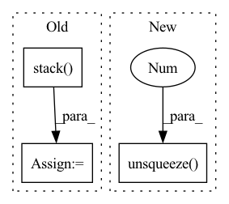

Pattern ID :144
Before Change
// Back to batch first
attn_scores = torch.stack(attn_scores).transpose(0, 1)
mel_outputs = torch.stack( mel_outputs) .transpose(0, 1).contiguous()
stop_tokens = torch.stack(stop_tokens).transpose(0, 1).squeeze(2)
// (B, T", mel_dim*r) -> (B, T, mel_dim)After Change
// Store predictions
mel_outputs.append(output)
attn_scores.append(attention_score.unsqueeze(1 ) )
stop_tokens.extend([stop] * self.r)
if greedy:In pattern: SUPERPATTERN
Frequency: 4
Non-data size: 3
Instances Fragment ID: 700186
Project Name: thuhcsi/tacotron
Commit Name: fea9ec535ec373aad564646f4f292fbee0217c29
Time: 2021-03-18
Author: johnson.tsing@gmail.com
File Name: model/tacotron.py
M Class Name: Decoder
N Class Name: Decoder
M Method Name: forward(4)
N Method Name: forward(4)
M Parent Class: nn.Module
N Parent Class: nn.Module
M File Name: model/tacotron.py
N File Name: model/tacotron.py
M Start Line: 87
M End Line: 187
N Start Line: 88
N End Line: 180
Before Change
// Back to batch first
attn_scores = torch.stack(attn_scores).transpose(0, 1)
mel_outputs = torch.stack( mel_outputs) .transpose(0, 1).contiguous()
stop_tokens = torch.stack(stop_tokens).transpose(0, 1).squeeze(2)
// (B, T", mel_dim*r) -> (B, T, mel_dim)
mel_outputs = mel_outputs.reshape(B, -1, self.mel_dim)
return mel_outputs, stop_tokens, attn_scores
After Change
// Store predictions
mel_outputs.append(output)
attn_scores.append(attention_score.unsqueeze(1 ) )
stop_tokens.extend([stop] * self.r)
if greedy: Fragment ID: 700190
Project Name: thuhcsi/tacotron
Commit Name: fea9ec535ec373aad564646f4f292fbee0217c29
Time: 2021-03-18
Author: johnson.tsing@gmail.com
File Name: model/tacotron2.py
M Class Name: Decoder
N Class Name: Decoder
M Method Name: forward(4)
N Method Name: forward(4)
M Parent Class: nn.Module
N Parent Class: nn.Module
M File Name: model/tacotron2.py
N File Name: model/tacotron2.py
M Start Line: 127
M End Line: 224
N Start Line: 127
N End Line: 216
Before Change
// input should be (seq_len, batch, input_size)
// the features extracted from the backbone CNN are fed to a one-layer GRU structure.
output_seq = torch.stack( batched_output_per_clip, dim=0)
gru_output, h_n = self.rnn(output_seq.unsqueeze(1))
gru_output = gru_output.squeeze(1)
for i in range(gru_output.size(0)):
hr = self.fc_resnet(gru_output[i, :])After Change
if t == 0:
gru_output, h_n = self.rnn(x.unsqueeze(1))
else:
gru_output, h_n = self.rnn(x.unsqueeze(1 ) , h_n)
// output dim: BSx1 and Squeeze sequence length after completing GRU step
x = self.fc_resnet(gru_output.squeeze(1))
// normalize by frame-rate: 25.0 for VIPL Fragment ID: 700188
Project Name: anweshcr7/rhythmnet
Commit Name: adec4d39977a38f9886da164d98a68aac1fcc004
Time: 2021-03-13
Author: anwesh.marwade@beyondsports.nl
File Name: src/models/rhythmNet.py
M Class Name: RhythmNet
N Class Name: RhythmNet
M Method Name: forward(3)
N Method Name: forward(3)
M Parent Class: nn.Module
N Parent Class: nn.Module
M File Name: src/models/rhythmNet.py
N File Name: src/models/rhythmNet.py
M Start Line: 33
M End Line: 64
N Start Line: 33
N End Line: 56
Before Change
self.combining_function(trial_embeddings, dim=0)
)
combined_embedding = torch.stack( combined_embedding, dim=0)
assert not torch.isnan(combined_embedding).any(), "NaNs in embedding."
// add number of trials as additional inputAfter Change
// Get number of trials from non-nan entries
num_batch, max_num_trials = x.shape[0], x.shape[self.aggregation_dim]
nan_counts = (
torch.isnan(x)
.sum(dim=self.aggregation_dim) // count nans over trial dimension
.reshape(-1)[:num_batch] // counts are the same across data dims
.unsqueeze(-1 ) // make it (batch, 1) to match embeddings below
)
// number of non-nan trials
trial_counts = max_num_trials - nan_counts
// get nan entries Fragment ID: 700183
Project Name: mackelab/sbi
Commit Name: 3831fd6d5fda0ca050db8c54868ed30558451042
Time: 2023-03-01
Author: jan.boelts@tum.de
File Name: sbi/neural_nets/embedding_nets.py
M Class Name: PermutationInvariantEmbedding
N Class Name: PermutationInvariantEmbedding
M Method Name: forward(2)
N Method Name: forward(2)
M Parent Class: nn.Module
N Parent Class: nn.Module
M File Name: sbi/neural_nets/embedding_nets.py
N File Name: sbi/neural_nets/embedding_nets.py
M Start Line: 274
M End Line: 300
N Start Line: 279
N End Line: 306